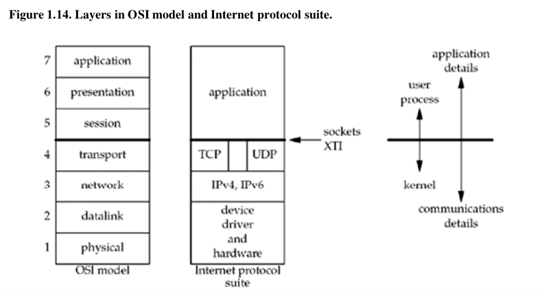

struct sockaddr
Everytime one of the socket functions requires a pointer to a socket address structure, that pointer must be cast to a pointer to a generic socket address structure. This is because the socket functions predate the ANSI C standard, so the void * pointer type was not available in the early 1980s when these functions were developed.[p41]
server model
- iterative server
- concurrent server
- one process per client(creating one child process for each client)
- one thread per client
- pre-fork a fixed number process or threads
OSI model and Internet protocol suite

Linux derived from Minix
We also note that Linux, a popular, freely available implementation of Unix, does not fit into the Berkeley-derived classification: Its networking code and sockets API were developed from scratch.
Exercises
1.3
errno: 97 socket error: Address family not supported by protocol
define AF_* at include/linux/socket.h
/* Supported address families. */
#define AF_UNSPEC 0
#define AF_UNIX 1 /* Unix domain sockets */
#define AF_LOCAL 1 /* POSIX name for AF_UNIX */
#define AF_INET 2 /* Internet IP Protocol */
#define AF_AX25 3 /* Amateur Radio AX.25 */
#define AF_IPX 4 /* Novell IPX */
#define AF_APPLETALK 5 /* AppleTalk DDP */
#define AF_NETROM 6 /* Amateur Radio NET/ROM */
#define AF_BRIDGE 7 /* Multiprotocol bridge */
#define AF_ATMPVC 8 /* ATM PVCs */
#define AF_X25 9 /* Reserved for X.25 project */
#define AF_INET6 10 /* IP version 6 */
#define AF_ROSE 11 /* Amateur Radio X.25 PLP */
#define AF_DECnet 12 /* Reserved for DECnet project */
#define AF_NETBEUI 13 /* Reserved for 802.2LLC project*/
#define AF_SECURITY 14 /* Security callback pseudo AF */
#define AF_KEY 15 /* PF_KEY key management API */
#define AF_NETLINK 16
#define AF_ROUTE AF_NETLINK /* Alias to emulate 4.4BSD */
#define AF_PACKET 17 /* Packet family */
#define AF_ASH 18 /* Ash */
#define AF_ECONET 19 /* Acorn Econet */
#define AF_ATMSVC 20 /* ATM SVCs */
#define AF_RDS 21 /* RDS sockets */
#define AF_SNA 22 /* Linux SNA Project (nutters!) */
#define AF_IRDA 23 /* IRDA sockets */
#define AF_PPPOX 24 /* PPPoX sockets */
#define AF_WANPIPE 25 /* Wanpipe API Sockets */
#define AF_LLC 26 /* Linux LLC */
#define AF_IB 27 /* Native InfiniBand address */
#define AF_CAN 29 /* Controller Area Network */
#define AF_TIPC 30 /* TIPC sockets */
#define AF_BLUETOOTH 31 /* Bluetooth sockets */
#define AF_IUCV 32 /* IUCV sockets */
#define AF_RXRPC 33 /* RxRPC sockets */
#define AF_ISDN 34 /* mISDN sockets */
#define AF_PHONET 35 /* Phonet sockets */
#define AF_IEEE802154 36 /* IEEE802154 sockets */
#define AF_CAIF 37 /* CAIF sockets */
#define AF_ALG 38 /* Algorithm sockets */
#define AF_NFC 39 /* NFC sockets */
#define AF_VSOCK 40 /* vSockets */
#define AF_MAX 41 /* For now.. */
1.4
#include "unp.h"
int
main(int argc, char **argv)
{
int sockfd, n;
char recvline[MAXLINE + 1];
struct sockaddr_in servaddr;
int counter = 0;
if (argc != 2)
err_quit("usage: a.out <IPaddress>");
if ( (sockfd = socket(AF_INET, SOCK_STREAM, 0)) < 0)
err_sys("socket error");
bzero(&servaddr, sizeof(servaddr));
servaddr.sin_family = AF_INET;
servaddr.sin_port = htons(13); /* daytime server */
if (inet_pton(AF_INET, argv[1], &servaddr.sin_addr) <= 0)
err_quit("inet_pton error for %s", argv[1]);
if (connect(sockfd, (SA *) &servaddr, sizeof(servaddr)) < 0)
err_sys("connect error");
while ( (n = read(sockfd, recvline, MAXLINE)) > 0) {
recvline[n] = 0; /* null terminate */
if (fputs(recvline, stdout) == EOF)
err_sys("fputs error");
counter += 1;
}
if (n < 0)
err_sys("read error");
printf("counter: %d\n", counter);
exit(0);
}
Output:
Sun Jun 8 14:36:06 2014
counter: 1
1.5
Server:
#include "unp.h"
#include <time.h>
int
main(int argc, char **argv)
{
int listenfd, connfd;
struct sockaddr_in servaddr;
char buff[MAXLINE];
time_t ticks;
int i, len;
listenfd = Socket(AF_INET, SOCK_STREAM, 0);
bzero(&servaddr, sizeof(servaddr));
servaddr.sin_family = AF_INET;
servaddr.sin_addr.s_addr = htonl(INADDR_ANY);
servaddr.sin_port = htons(9999); /* daytime server */
Bind(listenfd, (SA *) &servaddr, sizeof(servaddr));
Listen(listenfd, LISTENQ);
for ( ; ; ) {
connfd = Accept(listenfd, (SA *) NULL, NULL);
ticks = time(NULL);
snprintf(buff, sizeof(buff), "%.24s\r\n", ctime(&ticks));
//Write(connfd, buff, strlen(buff));
i = 0;
len = strlen(buff);
while (i < len)
{
Write(connfd, buff+i, 1);
i += 1;
}
Close(connfd);
}
}
Client:
#include "unp.h"
int
main(int argc, char **argv)
{
int sockfd, n;
char recvline[MAXLINE + 1];
struct sockaddr_in servaddr;
int counter = 0;
if (argc != 2)
err_quit("usage: a.out <IPaddress>");
if ( (sockfd = socket(AF_INET, SOCK_STREAM, 0)) < 0)
err_sys("socket error");
bzero(&servaddr, sizeof(servaddr));
servaddr.sin_family = AF_INET;
servaddr.sin_port = htons(9999); /* daytime server */
if (inet_pton(AF_INET, argv[1], &servaddr.sin_addr) <= 0)
err_quit("inet_pton error for %s", argv[1]);
if (connect(sockfd, (SA *) &servaddr, sizeof(servaddr)) < 0)
err_sys("connect error");
while ( (n = read(sockfd, recvline, MAXLINE)) > 0) {
recvline[n] = 0; /* null terminate */
if (fputs(recvline, stdout) == EOF)
err_sys("fputs error");
counter += 1;
}
if (n < 0)
err_sys("read error");
printf("counter: %d\n", counter);
exit(0);
}
localhost test:
./daytimetcpsrv &
./daytimetcpcli 127.0.0.1
#output:
Sun Jun 8 14:53:29 2014
counter: 1
Output on remote host test same as localhost